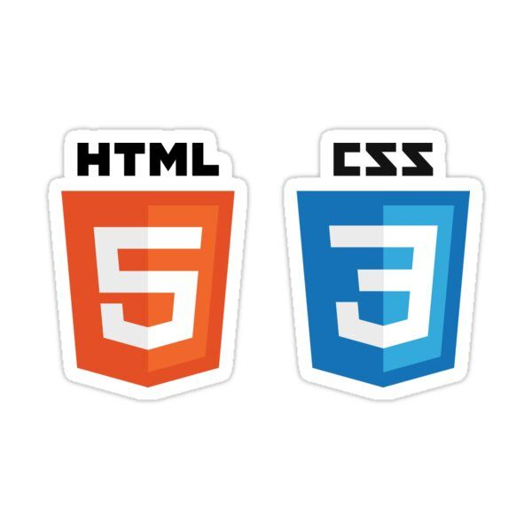
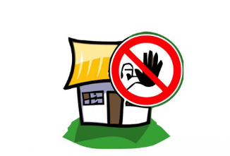
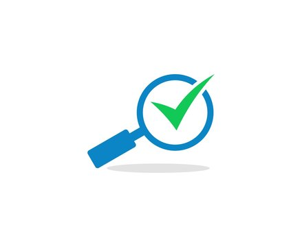

Accueil
Bonjour! Je suis Tourab SYED ZAIDI et j'ai 20 ans.
Je suis actuellement etudiant au lycée Charles de Foucauld (Paris 18e), en 2nd année de BTS SIO (Services Informatiques aux Organisations) option SLAM !
Je vous propose de me découvrir à partir de ce portfolio...
Veuillez consultez mon cv ci-dessous:
Compétences

HTML & CSS

Langage C

JAVA

PHP

MySQL et Merise 1-2
Projets



Veille
Tuto Veille Technologique:
La veille technologique désigne le processus de surveillance, de collecte, d'analyse et de diffusion d'informations liées aux évolutions, aux avancées et aux tendances dans le domaine des technologies, de l'innovation et de l'industrie.
Il est très important de se mettre à jour sans faire de jeux de mots...
En effet, nous pouvons être les plus brillants aujourd'hui, mais demain nous pouvons devenir facilement obsolètes
si nous n'apprenons pas de nouvelles technologies régulièrement...
C'est pourquoi j'ai choisis d'utiliser Google Alertes!
Etape 2: Activier les notifications et attendre d'etre notifié.
Ou bien, consultez les différents articles récents.
Ou bien, consultez les différents articles récents.
Le Thème de ma Veille Technologique: "L'Avenir des Jeux Vidéos"
Introduction : L'industrie du jeu vidéo est en constante évolution, intégrant de nouvelles technologies qui redéfinissent l'expérience des joueurs.
Cette veille technologique se concentre sur les tendances émergentes et les innovations qui façonneront le futur des jeux vidéo.
L'impressionnante machine GTA
Le journaliste de Jeux Vidéo Magazine, Mohammed Aigoin décrypte le succès de la machine GTA, avec son affolant trailer de GTA VI. Retour sur les chiffres halluciants du dernier sorti en date, GTA V. 30 millions de copies vendues en seulement un mois et demi après son lancement, pour 180 millions à l'heure actuelle. C'est tout simplement le produit culturel le plus vendu de l'histoire du jeu vidéo. GTA VI est lui le trailer de jeu vidéo qui a comptabilisé le plus de vues en 24 heures.
GTA 6 : l’énorme fuite du jeu aurait été commise avec… un Amazon Fire Stick
La nouvelle technologie des jeux vidéos est sans appelle.
Il faut savoir que Rockstar Games, a recruter environ 20 ingénieurs pour développer l'eau dans GTA VI !
Mais ce genre de nouvelle peuvent rendrent certaine personne très impatientes et veulent avoir ou devoiler le jeu en avance...
En effet, le jeu a fuité et plusieurs vidéos de tests (fait par les developpeurs ), sur les réseaux sociaux. Il s'agit d'un homme de 18 ans qui a pu acceder au serveur grace à un objet connect:
Amazon Fire Stick.L’Amazon Fire Stick tournant sur Fire OS, un fork du système Android développé par Amazon pour son appareil de streaming, le hacker aurait aisément pu le jailbraker afin d’y installer des outils l’aidant dans ses méfaits.
Epreuve E4
Sur cette section vous trouverez les documents concernant l'épreuve E4.
- Veuillez consultez ma fiche E4 ci-dessous:
- Veuillez consultez la Grille des Compétences ci-dessous:
 Mon github
Mon github{kind=link}